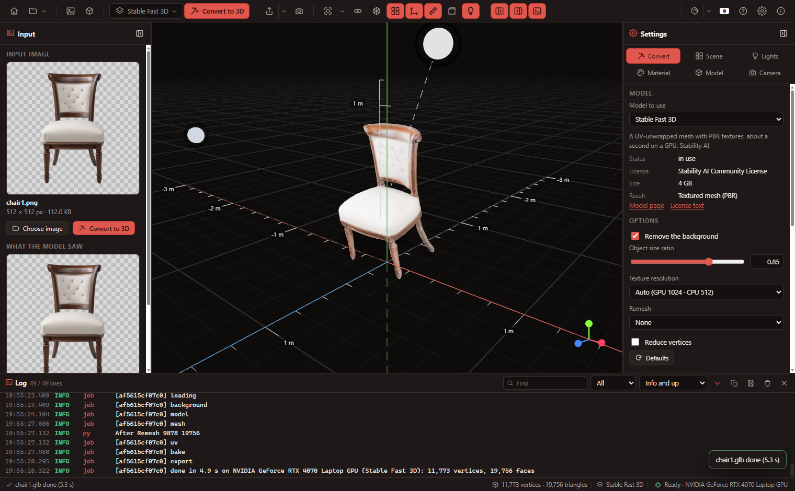
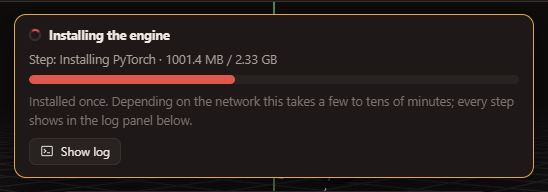
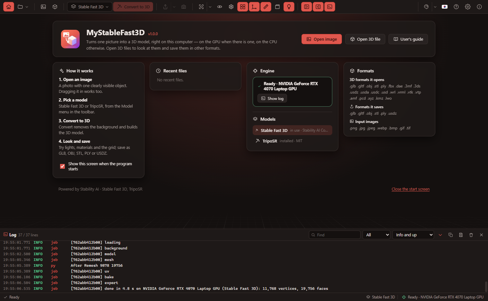
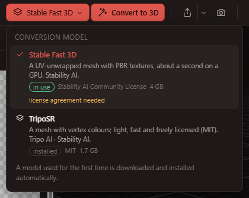
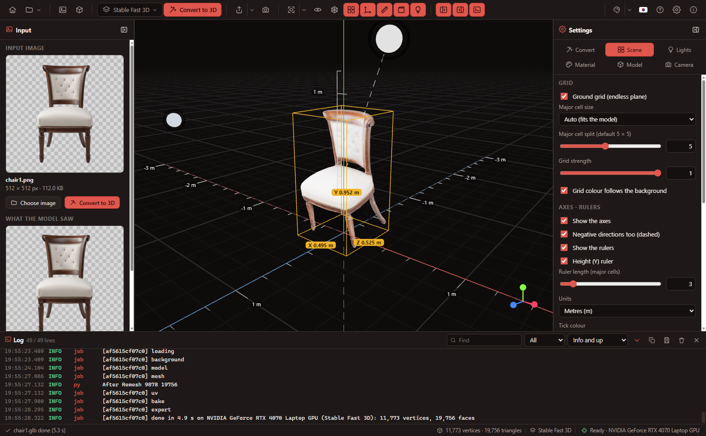
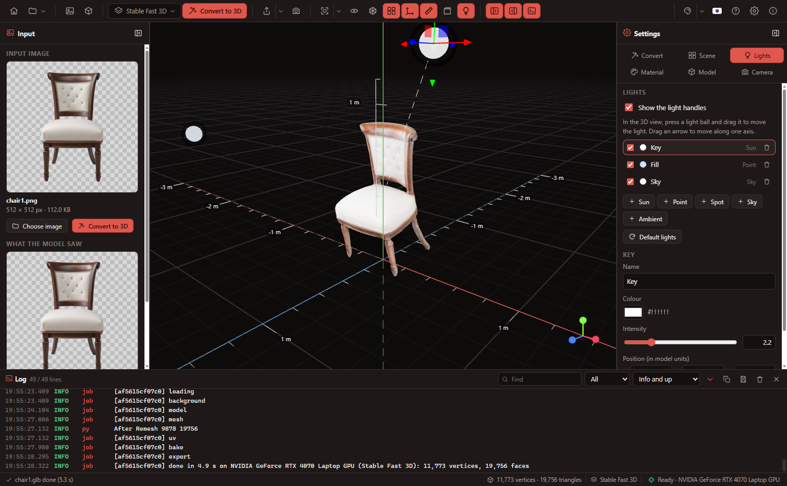
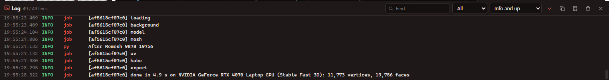
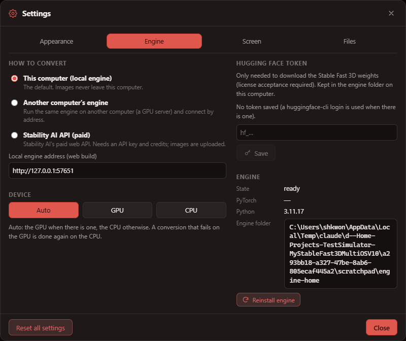

MyStableFast3D User’s Guide
Turn one picture into a 3D model, look at 3D files, and save them in other formats.
1. Introduction
MyStableFast3D runs Stable Fast 3D (Stability AI) and TripoSR (Tripo AI · Stability AI) on this computer to turn images into 3D models. The Windows, macOS and Linux desktop apps and the web build share the same screen.
- Local by default — images never leave the computer. The paid Stability AI API is only used when you switch it on in Settings.
- The GPU when there is one, the CPU otherwise — nothing to choose. A conversion that fails on the GPU is redone on the CPU automatically.
- Installs itself — Python, PyTorch and the models are installed on first run; every step shows in the log panel.
- 3D viewer and converter — opens GLB, glTF, OBJ, STL, PLY, FBX, DAE, 3MF, 3DS, USDZ and more, saves GLB, glTF, OBJ, STL, PLY and USDZ.

2. Installing and first run
- Run the installer (Windows
MyStableFast3D_1.0.0_x64-setup.exe, macOS.dmg, Linux.AppImage/.deb). - On first start the engine installs itself:
Step What Size (about) uv · Python Python 3.11 for the engine only (the system Python is not touched) 60 MB PyTorch CUDA build with an NVIDIA GPU, CPU build without, default build on a Mac (Apple GPU) CUDA 2.5 GB · CPU 200 MB Libraries transformers, trimesh, rembg … 500 MB Background model u2net 176 MB Conversion model the chosen model's code and weights (on first use) SF3D 4 GB · TripoSR 1.7 GB - When it is done the status bar shows Ready · (device). Later starts skip the installation.

3. The window
The window uses the system's own title bar; everything below it is the program.
| Area | Contents |
|---|---|
| Toolbar (top) | Home · File menu, open image / 3D file, the model picker and Convert to 3D, Save (format menu), Save view, view controls (fit · directions · auto-rotate · wireframe · grid · axes · rulers · bounding box · light handles), panels. At the right end: theme · language · guide · settings · about |
| Input panel (left) | The input image, what the model saw (background removed), and this session's history |
| 3D view (centre) | The model, endless grid, axes, rulers, lights, view cube (bottom right) |
| Settings panel (right) | Convert · Scene · Lights · Material · Model · Camera tabs |
| Log panel (bottom) | Everything installation and conversion do |
| Status bar | What is happening and its progress, vertex · triangle counts, the model, engine state and device |
Drag the inner edge of a side panel to resize it and use its header button to collapse it; drag the top edge of the log panel to change its height.
4. Start screen

The program opens on the start screen: open image, open 3D file and guide buttons, the steps, recent files, the engine state and the models, and the supported formats. The Home button shows or hides it at any time; untick Show this screen when the program starts to go straight to the 3D view.
5. Image to 3D
- Open image (Ctrl+O), or drop a picture on the window. PNG, JPG, WebP, BMP, GIF and TIFF are read.
- Pick a model in the toolbar's model menu (chapter 6).
- Press Convert to 3D (F5). The steps (background → model → mesh → UV unwrap → texture bake) and progress show over the view; Cancel (Esc) stops it.
- The result appears in the view and in the History on the left. What the model saw is the picture with its background removed and centred.
Options (Settings panel → Convert)
| Option | What it does |
|---|---|
| Remove the background | Keeps only the object. A PNG that is already transparent is used as is. |
| Object size ratio | How much of the picture the object fills (0.5–1, default 0.85) |
| Texture resolution (SF3D) | Auto is 1024 px on a GPU, 512 on the CPU. 2048 is sharper but slower. |
| Remesh · vertex count (SF3D) | Rebuilds an even mesh and reduces vertices (when the remeshing libraries are installed) |
| Mesh resolution · surface threshold (TripoSR) | Grid resolution for the surface (auto: GPU 256, CPU 192) and the density taken as surface |
6. Choosing a model

| Stable Fast 3D | TripoSR | |
|---|---|---|
| Result | UV-unwrapped mesh with PBR textures (colour, normal, roughness, metalness) | Vertex-coloured mesh |
| Time (RTX 4070 laptop) | about 1.5 s | about 6 s |
| Time (16-thread CPU) | about 30 s | about 20 s |
| License | Stability AI Community License (acceptance required) | MIT |
| Weights | 4 GB | 1.7 GB |
A model is installed automatically the first time it converts (or when its download button in the menu is pressed). One model is in memory at a time; switching unloads the previous one.
7. GPU and CPU
- Auto (default): an NVIDIA GPU (CUDA), the Apple GPU (MPS) on Apple-silicon Macs, the CPU otherwise.
- When a conversion fails on the GPU (memory, driver), the model moves to the CPU and the same image is converted again. The log says so, and the Settings panel's Last conversion shows "GPU failed → CPU".
- Settings panel → Convert → Device can fix it to the GPU or the CPU.
- A computer without a GPU gets the CPU build of PyTorch (about 200 MB) from the start.
8. Opening 3D files
Use Open 3D file (Ctrl+Shift+O) or drop the file on the window.
| Format | Extensions |
|---|---|
| glTF | .glb .gltf |
| Wavefront OBJ (+MTL, textures) | .obj |
| STL · PLY | .stl .ply |
| FBX · COLLADA · KMZ | .fbx .dae .kmz |
| 3MF · AMF · 3DS · LightWave | .3mf .amf .3ds .lwo |
| USD | .usdz .usda .usdc .usd |
| VRML · VTK | .wrl .vrml .vtk .vtp |
| Point clouds | .pcd .xyz |
Files a model refers to — an OBJ's MTL and textures, a .gltf's .bin and pictures — are found in the same folder by the desktop app. In the web build, select them together in the open dialog or drop them together.
9. Moving around
| Mouse | Does |
|---|---|
| Left drag | Orbit around the model |
| Right drag (or Shift+left) | Pan |
| Wheel | Zoom |
| Click the view cube (bottom right) | Look along that axis |
Fit to view (F) frames the model and the lights; its arrow menu offers front · back · left · right · top · bottom · isometric. Auto-rotate circles slowly (speed in the Camera tab).
10. Grid · axes · rulers

- Grid: an endless plane on the ground (Y = 0). Each major cell is split 5 × 5 and the lines fade with distance. The major cell is automatic (a 1 m model gets 1 m cells with 20 cm squares) or chosen; divisions, strength and colour can be changed.
- Axes: X (red) · Y (green, up) · Z (blue); negative directions dashed.
- Rulers: ticks every small square along X and Z with the length at each major cell, and a height (Y) ruler at the model's back corner. Units: m · cm · mm · in or none.
- Bounding box: the box around the model with its X · Y · Z dimensions.
The background (theme colour · solid · gradient · environment), environment reflections, tone mapping, exposure and shadows are in the Scene tab too.
11. Lights

- Press a light ball in the 3D view and drag it to move the light. The selected light carries a move handle: drag an arrow to move along one axis, a square to stay in one plane.
- The dashed line shows where the light points (the model's centre).
- Kinds: Sun (directional, shadows) · Point · Spot · Sky (sky / ground colours) · Ambient. Each has on/off, colour, intensity, position, shadows, angle …
- Positions are kept in the model's size units, so lights keep their place around models of any size. The arrangement is remembered; Default lights restores the first three.
12. Materials and display
| Material | Shows |
|---|---|
| Original | The file's textures and materials |
| Clay | Plain grey, shape only (colour adjustable) |
| Normals | Face directions as colours |
| Vertex | Colours stored in vertices (TripoSR results) |
Wireframe, flat shading and back faces can be switched on. Display materials only change the view; saving uses the original materials.
13. Rotating and scaling
The Model tab shows the file (vertices · triangles · materials · textures, size) and sets rotation (degrees) and scale. Buttons like X −90° stand Z-up files upright. The model always stands on the ground; rotation and scale are applied when saving.
14. Saving and converting
Save (Ctrl+S) uses the last format; its arrow menu picks another. Whatever format a model came in, it can be saved in any of these:
| Format | Textures | For |
|---|---|---|
| glTF Binary (.glb) | included | web, game engines, Blender (recommended) |
| glTF (.gltf) | included (embedded) | readable JSON |
| Wavefront OBJ (.obj) | no | wide compatibility |
| STL (.stl, binary / ASCII) | no | 3D printing |
| PLY (.ply) | vertex colours | point clouds, scans |
| USDZ (.usdz) | included | Apple AR Quick Look |
Save view saves what the view shows as a PNG. A history item's save button saves that result as it is. Settings → Files can save each result next to its image automatically (desktop).
15. Log panel

Installation (packages, model downloads), model loading, each conversion step and errors collect here in order. Filter by source (app · launcher · engine) and level (debug · info · warning · error); find, copy, save to a file or clear. Ctrl+L shows or hides it; clicking the engine state in the status bar opens it.
16. Settings

| Tab | Contents |
|---|---|
| Appearance | Themes (20 dark · 20 light · custom), language, font · size · style |
| Engine | How to convert (this computer · another computer's engine · Stability AI API), device, Hugging Face token, restart · open folder · reinstall |
| Screen | Start screen, toolbar labels, status bar, log panel |
| Files | Default format, automatic saving |
How to convert
- This computer (local engine) — the default. Images stay on the computer.
- Another computer's engine — run the engine on a GPU machine with
npm run engine -- --host 0.0.0.0and enter its address (e.g.http://192.168.0.10:57650). - Stability AI API (paid) — off by default. Choosing it asks for confirmation and an API key; every conversion uses credits and uploads the image to Stability AI. While it is in use the status bar says "Stability AI API (paid)".
17. Web build
The web build opens the same screen in a browser; conversions run in the engine on this computer.
npm run web— the dev server (http://localhost:5195) and the engine (http://127.0.0.1:57650) together. The engine shares the desktop app's folder, so it installs once.npm run engine— the engine alone; takes--port,--hostand--home.npm run build— the web page indist/, for any web server; the engine address is set in Settings → Engine.
18. Shortcuts
| Keys | Does |
|---|---|
| Ctrl+O | Open image |
| Ctrl+Shift+O | Open 3D file |
| F5 or Ctrl+Enter | Convert to 3D |
| Esc | Cancel the conversion |
| Ctrl+S | Save |
| F | Fit to view |
| Ctrl+L | Log panel |
19. Data and uninstalling
| What | Windows | macOS / Linux |
|---|---|---|
| Settings | %APPDATA%\MyStableFast3D\settings.json | ~/Library/Application Support/MyStableFast3D · ~/.config/MyStableFast3D |
| Engine (Python, PyTorch, model code, background model) | %LOCALAPPDATA%\MyStableFast3D\engine | ~/Library/Application Support/MyStableFast3D/engine · ~/.local/share/MyStableFast3D/engine |
| Model weights | The shared Hugging Face cache ~/.cache/huggingface (used by other programs too) | |
Uninstalling on Windows asks separately whether to remove the engine (several GB) and the settings. The shared Hugging Face cache is left alone. To install the engine afresh, use Settings → Engine → Reinstall engine.
20. Troubleshooting
| Symptom | Remedy |
|---|---|
| "Cannot reach the engine" (web) | Check that npm run engine is running and the address in Settings → Engine. |
| "Token needed" | Accept the license and enter a token as in chapter 2, or use TripoSR. |
| Installation failed | Read the error in the log panel and press Retry. PyPI, download.pytorch.org, github.com and huggingface.co must be reachable. |
| A GPU, but the CPU is used | Update the NVIDIA driver, then Settings → Engine → Reinstall engine. |
| Odd results | Try a plainer background, another object size ratio, or the other model. |
21. Licenses
MyStableFast3D is MIT-licensed. The models are not included; they are downloaded on first use under their own licenses.
- Stable Fast 3D — Stability AI Community License; commercial use is free below USD 1M annual revenue (registration required). Powered by Stability AI. This Stability AI Model is licensed under the Stability AI Community License, Copyright © Stability AI Ltd. All Rights Reserved.
- TripoSR — MIT (Tripo AI & Stability AI)
The compiled extensions (texture_baker, uv_unwrapper, torchmcubes) are replaced by PyTorch / scikit-image code that does the same. See NOTICE.md and LICENSE-MODELS.md in the installation folder.